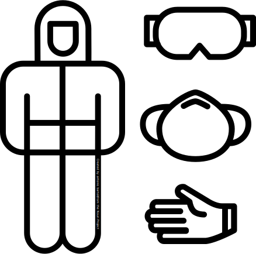

We're not OK
until everyone's OK
When will the pandemic end?
The rate at which vaccines have been developed and
distributed
has been impressive. In the Western world record numbers have
been vaccinated against Covid-19 in a matter of months.
Right
now we see countries such as Denmark and Norway return
to normal, whilst managing to keep the rate of serious illness
at
acceptable levels thanks to the collective immunity built up
by
their vaccination drives.
Imagine then, being among the millions of young people
across
the African continent whose careers, studies and social life
have
been put on hold for an indefinite amount of time.
Of all the Covid-19 vaccines administered until now, only
2%
have been given to people in Africa. What this means is
that
only 4,5% of Africans have received a Covid-19 jab so
far.
It's up to you
As long as the virus is out there somewhere, our lives
will
never return entirely back to normal. And the longer
the
pandemic lasts, the bigger the risk of a new
vaccine-resistant
mutation will emerge and eventually find it's way back to
you.
However, you can help. By contributing to a fairer
global vaccine distribution through the UN's
Covid-19 Solidarity Response Fund, you will be
part of the effort that assists young Africans out of the
pandemic and back to their normal lives – while also
helping yourself stay safe from future mutations.
The results
Rest assured that your contribution couldn't go
to a more dedicated and passionate group of people. In 2020,
as the pandemic was raging across the world,
The Covid-19 Solidarity Response Fund
fought an all out battle against the virus.
Key performance metrics include the following
achievements in 2020:
-

243 million items of PPE equipment distributed globally
-
19 million Covid-19 tests shipped to health centres across the world.
-
12 000 intensive care unit beds donated to struggling hospitals.
-
19,7 million respirator masks distributed to vulnerable populations.
-
191 Emergency Medical Teams deployed internationally.